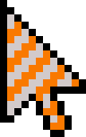
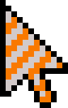

The main feature of this extension is being able to pick from a selection of cursors to customise your browsing
experience.
The cursors availible are shown above.
To use this extension, you first need to right click on the icon, and select 'options'. Once you arrive, you have three options.
If your have any questions or problems, you can use the support tab in the chrome webstore, or email me at bbusch.devloper@gmail.com
Added Pointer Feature
In this update, I added the feature to change your cursor from within any webpage.
Simply click on the icon in the top right-hand corner, and select your cursor from there.
In this new update, I have added the ability to choose from a selection of cursors, as well as the ability to use your
own image.
To select a cursor, right click on the icon in the top right, and select options. Next, select a cursor and if you are
happy with it, press Save Changes.
Also, I have removed my Fish Cursor extension and replaced it with a fish cursor option.